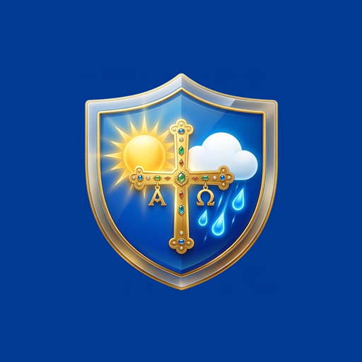
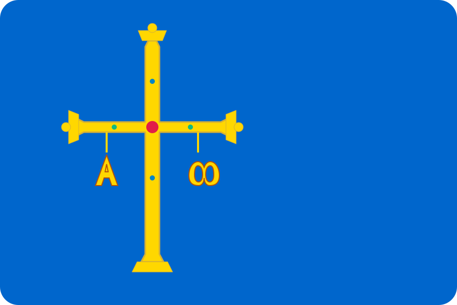

Estación Meteorológica Asturias
scroll-snap), tanto en móvil como en PC, con soporte táctil y arrastre con ratón (drag-to-scroll).
💨 Barlovento, ⏱️ Barómetro, 💧 Humedad, 🌧️ Lluvia, ☀️ UV, 🍃 Aire, 👕 Colada). Pastillas rediseñadas en silueta compacta subordinada (8px) para no competir con el menú principal superior y garantizar una jerarquía visual armónica.
.loc-name-es) y nombre en asturianu un 16% más pequeño subordinado en el dorado noble de la Cruz de la Victoria (.loc-name-ast, #fbbf24), con filtro anti-duplicados para concejos con nombre único y localidades secundarias en gris compacto.
COLOR_SCHEME_DARK). Si el dispositivo móvil está configurado en tema blanco/normal, la barra inferior de navegación permanece inmutablemente en azul noche profundo (#070D17), eliminando la barra blanca residual.
◁ ○ □): Desactivado el flag de iconos claros sobre la ventana nativa (APPEARANCE_LIGHT_NAVIGATION_BARS = 0). Los 3 botones de navegación clásicos se dibujan siempre con iconos blancos de máximo contraste, 100% visibles y perfectamente integrados.
color-scheme: dark en metadatos y CSS global para garantizar que los motores de renderizado nunca inviertan colores ni apliquen estilos claros.
🌇 Ocaso • HH:MM) y salida (🌅 Amanecer • HH:MM) del sol.
.is-twilight) con sutiles halos ámbar al atardecer y celeste al amanecer, logrando un degradado orgánico de 72 horas.
fullscreen (inmersivo) a standalone. Los 3 botones clásicos de Android (◁ ○ □) permanecen siempre visibles, transparentes y accesibles al instante sin necesidad de deslizar la pantalla para despertarlos y sin parpadeos ni tirones visuales.
Híbrido (en lugar de Consenso), reflejando con exactitud la fusión inteligente de AROME (1.3 km) con ECMWF.
flex-shrink: 0 a las tarjetas del menú para impedir que Flexbox las encoja verticalmente en pantallas de móvil reducidas. Iconos (🌟, 🎨, 📖, 📍) y títulos 100% íntegros, sin cortes superiores ni mutilación de texto.
● En Directo) y Menú (con icono ⚙️ blindado y modelo activo conciso, ej. Consenso, ECMWF, AROME). Cero desniveles y cero textos cortados con puntos suspensivos.
➔.
overflow-x: hidden estricto, garantizando tarjetas 100% encuadradas y fluidas en todos los anchos de pantalla.
ECMWF, AROME, GFS), manteniendo visible qué motor calcula el tiempo sin sobrecargar la pantalla.
︿) ultranítido en trazo fino, mimetizado a la perfección con la interfaz Liquid Glass.
#fbbf24): Sintonizado con la Cruz de la Victoria y el oro de la bandera de Asturias, con aura dorada suave en reposo y resplandor ambarino al pulsar.
blur(16px) saturate(180%)) con reflejo de luz superior blanco para una integración estética absoluta.
⬆️) en la esquina inferior derecha, al alcance natural del pulgar en cualquier teléfono móvil.
.forecast-scroll-hint en ambas vistas del carrusel de surf (⏱️ 3 Horas: 👉 Desliza horizontalmente para ver cada 3 horas ➔ y 📅 7 Días: 👉 Desliza horizontalmente para ver los 7 días de surf ➔).
isInteractiveZone() de app.js, garantizando que el deslizamiento horizontal explore con precisión las olas sin conmutar de módulo.
🚗 Cómo llegar al inicio): Enlace universal directo a Google Maps calibrado con las coordenadas geodésicas exactas del punto de salida, abriendo la ruta guiada por voz en el móvil del senderista con cero rastreo ni fricción.
🧭 Tracks en Wikiloc ↗): Conexión limpia con la base de datos de Wikiloc para visualización de mapas topográficos y descarga de tracks GPX para relojes deportivos y dispositivos GPS.
rel="noopener noreferrer", sin recolección de datos personales, conformes al RGPD y a las directivas de Google Play Store.
🥾 Guía de la Senda • ➔ Ver ficha) con apertura de modal interactivo y respuesta táctil háptica.
📍 Municipio, 🚗 Distancia, 🏷️ Categoría, ⛅ Cielo Óptimo), otorgando el 100% del ancho del chip a la información.
.t-chip-val (white-space: normal; line-height: 1.25;) erradicando los puntos suspensivos (...) en tiempos de trayecto en minutos, categorías y estados de cielo óptimo.
📏 Distancia, ⏱️ Tiempo, ⛰️ Desnivel, 🚩 Inicio), liberando el 100% del ancho para los valores numéricos y nombres de destino.
white-space: normal; line-height: 1.25;) según la Ley 19, permitiendo que orígenes largos (ej. «Playa de Arnao / Santa María del Mar») se lean íntegros en smartphones.
event.stopPropagation() inline de los botones por salvaguardas reactivas en las cabeceras plegables (if (!event.target.closest('button, a')) ...), permitiendo que los clics alcancen la delegación global en document sin colapsar ni desplegar accidentalmente las tarjetas.
WEATHER_EXPLANATIONS.wind (explicación de rachas, Beaufort y puentes expuestos).
WEATHER_PHENOMENA.mar_fondo).
WEATHER_EXPLANATIONS.
[ 📋 Tarjetas ] | [ 📈 Curvas ]): La suite completa de gráficos interactivos multivariable (térmico, hidrograma de lluvia, viento, barómetro, cota de nieve, nubosidad y combinado) se integra de forma directa y elegante en la tarjeta de pronóstico horario de la Estación en Vivo.
localStorage, permitiendo alternar al instante con un solo toque y recalculando el canvas dinámicamente con su inspector táctil.
1-9): Los 9 módulos se mapean de forma natural del 1 al 9 en teclado físico para Windows y escritorio.
00h - 08h): Incorporado el botón nocturno superior con física estricta lunar (is_day = 0), acento índigo Liquid Glass (#818cf8) y cálculo del volumen de precipitación en horas de madrugada.
08h - 15h): Truncada a la hora de comer con acento ámbar dorado (#fbbf24) e insolación matinal progresiva.
15h - 00h): Cobertura de las horas de máxima temperatura, convección vespertina y anochecer con acento azul cantábrico (#38bdf8).
Costa - Litoral): Corrección del extractor automático de alertas para mapear tanto avisos terrestres como costeros marítimos oficiales de AEMET (Litoral Occidental y Litoral Oriental/Central).
🌊): Mapeo dinámico del tipo de aviso de costeros con el icono de oleaje y mar combinada, preservando la jerarquía de severidad (Naranja / Amarillo / Rojo).
.alert-chevron): La flecha de la tarjeta oficial de AEMET adopta la misma burbuja translúcida Liquid Glass con borde iluminado y micro-animación hover que las alertas silenciosas, ganando máxima presencia visual e incitando al toque para desplegar los avisos.
▼ a ▲) con retroalimentación visual al abrir y cerrar los avisos oficiales de AEMET.
▼ / ▲): Con un solo toque en la cabecera o la flecha circular se desglosa todo el contenido (viaductos sensibles, trazados, métricas viales, explicaciones físicas y cláusulas legales), replicando la ergonomía de la tarjeta de avisos de AEMET.
💡): Los accesos didácticos directos a la física del fenómeno abren su panel explicativo con aislamiento de eventos sin alternar el estado de apertura de la tarjeta.
#fbbf24) con resplandor cálido sutil, garantizando máxima visibilidad e invitando a la interacción frente al fondo oscuro de la tarjeta.
?test=baro_anticiclon_caida, ?test=baro_borrasca_caida, ?test=baro_borrasca_profunda, ?test=baro_ciclogenesis y ?test=baro_subiendo_fuerte para comprobar cada estado barométrico en vivo.
weatherApi.js que forzaba Soleyeru / Despejado (☀️ 15% nubes) al confundir la radiación difusa y el índice UV teórico de las horas centrales (12h-14h) con cielo limpio.
ΔP 3h) para anticipar temporales antes de que llegue la primera racha o lluvia.
?test=presion (aviso naranja de borrasca) y ?test=ciclogenesis (aviso rojo de desplome barométrico).
⚠️.
?test=lluvia (naranja) o ?test=lluvia_torrencial (rojo).
⚠️.
?test=viento (naranja) o ?test=viento_severo (rojo).
Surf Top Mundial, Surf Potente, Spot Polivalente, Mítico) se sitúe justo debajo en una subfila dedicada.
▾ centrada verticalmente, garantizando lectura fluida de nombres largos sin estrangulamientos en smartphones.
Surf Top Mundial, Monumento Natural, Familiar) se sitúe justo debajo, eliminando por completo la compresión horizontal que forzaba a partir los nombres en 3 o 4 palabras verticales.
white-space: nowrap por ajuste multilínea inteligente y natural (white-space: normal; overflow-wrap: break-word) en los títulos de tarjetas tanto de Rutas (.route-card-name) como de Planes y Ocio (.tourism-card-name).
Muy Fácil, Media), la etiqueta ✨ Ideal hoy ni el chevron desplegable.
0.88rem e interlineado 1.25 en dispositivos móviles (< 640px) para mantener un diseño visual compacto, simétrico y perfectamente alineado.
🥾 Rutas & Senderismo en Castrillón), banner de condiciones contextualizado («En Castrillón:...»), firme con valor explícito (Barro Leve, Firme Seco, etc.) y relieve adaptado según la geografía (Miradores & Cotas en costa frente a Cumbres & Pasos en montaña).
Responsabilidad y Seguridad en Entornos Naturales.
«Todas».
Todas, 🟢 Fáciles, 🟡 Medias, 🔴 Exigentes), con encuadre perfecto en pantallas estrechas.
🌅 MAÑANA (00h - 14h) y 🌇 TARDE (14h - 24h).
.d-dp-hours para garantizar encuadre perfecto y cero desbordes en cualquier smartphone de 320px a 380px.
🔒 Bloqueado que se superponía sobre el título en teléfonos móviles, permitiendo que 🎃 Especial Halloween luzca limpio con su subtítulo oficial de fechas.
1 1 0 y optimización de márgenes en móviles, garantizando que los 6 fenómenos climáticos quepan con simetría y holgura en todas las tarjetas sin ningún corte lateral.
min-width: 0 y pastilla 🔒 Bloqueado protegida con flex-shrink: 0 para erradicar cualquier recorte de texto en pantallas de 360 px.
🕵️♂️ Top Secret sin saturar el contenedor.
#icon-themes-modal) se presentan con un elegante efecto de censura pixelada y trama de cuadrícula, permitiendo vislumbrar los destellos de color pero manteniendo en secreto el diseño exacto hasta el 31 de octubre.
🕵️♂️ Top Secret • Revelación en Samhain sobre la vista previa, despixelándose automáticamente en las fechas oficiales del evento o en modo de prueba.
weatherHalloweenIcons.js con calabazas Jack-o'-lantern solares, luna con silueta de bruja volando en escoba, resol místico velado, niebla densa mojada (wet-fog) con ectoplasma y rocío, castillo encantado con tormenta, y murciélagos.
#icon-themes-modal) con badge en negrita 🔒 Solo 31 Oct - 1 Nov, aviso de desbloqueo automático y botón de prueba en vivo.
formatCivilSunTime se reconstruye el instante UTC universal puro restando el offset de la API y formateándolo con la base IANA de husos horarios (Europe/Madrid).
0.0 mm y se resuelve en Soleado (☀️), Resol (🌥️) o Claros (⛅).
weatherIcons.js, motor de consenso de weatherApi.js, Asesor de Tendido (laundryAdvisor.js) y Semáforu del Paragües (umbrellaAdvisor.js).
0.0 mm con cielo seco (código 3 = Cubiertu) y humedad no saturada (< 86%), el consenso anula la lluvia fantasma y fija 0.0 mm y cielo cubierto.
weatherIcons.js, ninguna llovizna (< 0.5 mm) se valida como lluvia si la humedad es < 85%, reconociendo que las micro-gotas se evaporan en los 1.000 m de caída libre (virga).
min-width: 0) en el pronóstico a 7 días. La tarjeta hereda la arquitectura infalible de la tira de 24 horas (min-width: 105px; flex: 1 1 105px; align-items: stretch;), expandiéndose en tablets y escritorios y deslizando suave en móviles sin depender jamás de toques en pantalla.
overflow-x: visible; justify-content: space-between;) para que Chromium en Android dibuje la tarjeta al instante en el milisegundo 1 sin esperar ningún toque en pantalla.
0.1 mm solo se clasifica como llovizna si la humedad relativa supera el 90%.
isolation: isolate; transform: translateZ(0); backface-visibility: hidden;) en el carrusel de esquí a 7 días (.ski-7days-carousel) y en sus iconos (.ski-day-icon y .daypart-icon).
7–16 km/h (Chop)) dentro de la pastilla de textura marina de la Hero Card para conocer la fuerza real del viento sin tener que desplazarse al cronograma horario.
6.8 – 16 km/h), destacando tanto la velocidad media sostenida como la racha perceptible en vivo.
Media: 6.8 • Racha: 16 km/h) y ajuste tipográfico elástico que impide cualquier desborde horizontal junto a la rosa de los vientos en pantallas de 320px a 380px.
.surf-texture-chip), limpia y de una sola línea sin colisión de textos.
🏖️ Playas (en lugar de «🏖️ Todas las playas (xx)»), evitando que el botón colisione con el botón de Webcams o sufra recortes con puntos suspensivos en móviles.
Familiares, Calas, Surf, Salvajes) sin textos compuestos ni contadores numéricos, garantizando que al seleccionar cualquier filtro el texto se muestre completo y holgado en cualquier pantalla.
span exterior redundante en el selector de playas, integrando el emoji directamente en cada opción del menú (🏖️ Todas las playas, 👨👩👧👦 Familiares, 🪨 Calas & Pozas, 🏄♂️ Surf, 🌿 Salvajes & Dunas).
🏖️ Todas las playas ▾, familiares, calas, surf, salvajes) alineado en una sola fila compacta junto al botón de Webcams.
📹 Webcams ●) dentro del carrusel de filtros con punto rojo pulsante.
Seguridad de Baño con la misma estructura simétrica que las otras tres (Etiqueta, Valor Hero y dos líneas de detalle contextual).
Todas, 👨👩👧👦 Familiares, 🪨 Calas & Pozas, 🏄♂️ Surf y 🌿 Salvajes & Dunas) con contadores en vivo.
Fondo / Entorno, Marea Óptima y Recomendación) con acabado Glassmorphism.
📈 Curva 72h y 📅 7 Días con tipografía y padding protegidos para pantallas móviles estrechas (< 380px), garantizando que no se corte ningún carácter y armonizando con los selectores de Surf y Cordillera.
📈 Curva Continua 72h | 📅 Marea Semanal 7 Días) que evita el apilamiento de dos carruseles horizontales consecutivos, eliminando la fricción táctil en pantallas móviles.
.foehn-title-group, .galerna-title-group, .xelu-title-group, .snow-title-group, .thunderstorm-title-group, .road-wind-title-group y .mar-fondo-title-group con alineación flex estricta, impidiendo que el icono salte solo a una línea superior huérfana en pantallas móviles.
🌍) que se renderizaba simultáneamente en el título interno y en la cabecera del registro sísmico.
.seismic-title-group): Encapsulado el icono 🌍 y el texto del título en un bloque unificado ergonómico con alineación flex estricta, impidiendo que el icono se desacople o quede solo en una fila superior en pantallas móviles estrechas.
?test=emergencia_roja o ?test=aemet_rojo.
aemetPulseYellow, aemetPulseOrange y aemetPulseRed) con variación de intensidad cromática de borde, halo exterior e iluminación interna en el marco.
?test=aemet, ?test=aemet_naranja, ?test=aemet_rojo) para comprobación inmediata en local.
.surf-slot-card) adoptan la misma cabecera, tipografía, badges de calidad/textura y distribución horizontal de oleaje y viento que las tarjetas de 7 días.
scroll-snap-stop: always), preservación de scroll vertical libre (touch-action: pan-x pan-y) e indicador didáctico de deslizamiento inferior.
.surf-daily-cards-grid) de columna vertical infinita a carrusel táctil horizontal monotarjeta al 100% con fijación magnética (scroll-snap-stop: always) y touch-action: pan-x pan-y.
isInteractiveZone para evitar cambios involuntarios de menú.
touch-action: pan-x pan-y en el carrusel de Pronóstico a 10 Días y en Marea Semanal. Apoyar el pulgar sobre las tarjetas para subir o bajar por la página ahora responde con total fluidez, erradicando el bloqueo que impedía hacer scroll vertical.
.tide-day-card) pasa a ocupar el 100% exacto del ancho de smartphone con salto magnético de uno en uno (scroll-snap-stop: always), permitiendo leer las pleamares, bajamares y coeficientes con máxima holgura y sin espacios residuales.
scroll-snap-stop: always), permitiendo ver el día completo sin recortes a la derecha ni restos del día anterior.
isInteractiveZone) para que al deslizar el pulgar entre días no se active el cambio involuntario de menú o pestaña.
scroll-snap día a día a la altura ergonómica del pulgar.
heroWeatherFloat) a un ciclo natural de 3.2s con ascenso de -8px, expansión armónica del 10% (scale(1.10)), sutil balanceo pendular mecido por la brisa (±2°) y aura de luz viva.
shareCardGenerator.js) ahora renderiza el icono del tiempo central a gran tamaño y los 6 iconos de la evolución horaria en alta resolución vectorial con el tema activo configurado.
renderWeatherIconHtml) en el badge de tiempo actual de cada estación de esquí (.ski-sky-icon), en el carrusel semanal a 7 días (.ski-day-icon) y en los tramos de pistas de Mañana y Tarde (.daypart-icon), sustituyendo los antiguos emojis planos por los iconos temáticos SVG oficiales (Asturiano por defecto, Liquid Glass 3D, Píxel, Neón, Boceto o Futurista).
prefs.iconTheme desde app.js, garantizando una identidad visual 100% uniforme con el resto de la aplicación.
renderWeatherIconHtml) en la cinta horaria de cielo y viento (.chart-sky-timeline) y en el Live Inspector Readout, sustituyendo los antiguos emojis planos por los iconos vectoriales SVG oficiales del sistema (Asturiano por defecto, Liquid Glass 3D, Píxel, Neón, Boceto o Futurista).
.section-subtitle, alineando su estética con el resto de módulos de la aplicación.
.section-subtitle, alineando su estética con el resto de módulos de la aplicación.
heroWeatherFloat) al icono del tiempo actual. Compatible al 100% con los 7 temas (Emojis clásicos, Asturiano, Liquid Glass 3D, Neón, Píxel, Boceto y Futurista).
sensorIconSubtlePulse) en todos los iconos de las tarjetas de sensores (anemómetro, lluvia, barómetro, etc.), aportando vida y dinamismo en perfecta armonía visual sin saturar la pantalla.
.weekly-tides-grid, .weekly-tides-card y .tide-day-card a la zona interactiva protegida (isInteractiveZone) y directiva touch-action: pan-x.
scroll-snap y aceleración nativa.
1.08rem JetBrains Mono y las alturas a 0.80rem, logrando un acabado más elegante, sobrio y equilibrado dentro de cada píldora.
💡, despejando notablemente las cabeceras de todos los sensores (Viento, Barómetro, Humedad, Pluvio, UV, Polen, Mareas, Oleaje y Colada).
title y aria-label enriquecidas.
[ 💡 Guía de Surf y Olas ] se sitúa en su propia fila independiente debajo del título, con ancho completo y altura táctil confortable de 44px, eliminando cualquier compresión tipográfica o colisión horizontal en pantallas móviles.
[ 💡 Guía de Surf y Olas ] se reubica directamente en la cabecera de la sección de rompientes, ofreciendo acceso inmediato al compendio formativo sin recargar la pantalla.
1.35rem JetBrains Mono y altura en metros sin compresión).
1.35rem JetBrains Mono y altura en metros), garantizando una visualización nítida, amplia y sin compresión en cualquier tamaño de móvil.
📅 Pronóstico a 10 Días en lugar de Pronóstico Extendido a 10 Días, 🏖️ Playas & Mareas, 🏄♂️ Surf & Rompientes, 🥾 Rutas & Senderismo, 🏔️ Cordillera & Nieve, 📡 Radar en Directo, ⚖️ Comparador Climático), evitando duplicar la información que ya figura de forma nítida en los subtítulos y badges.
MeteoAsturLode en azul y oro asturiano, aprovechando que la app no incluye publicidad para ofrecer una experiencia estética de alta gama.
1.68rem en escritorio y 1.40rem en móviles (con letter-spacing: -0.5px y white-space: nowrap), logrando que el nombre destaque con nitidez y fuerza visual sin ocupar más de una línea ni desbordar la cabecera.
MeteoAsturLode sin espacios y con escala tipográfica compacta y estilizada (1.45rem en escritorio, 1.25rem en móvil), garantizando su presencia en una única línea horizontal y reduciendo la ocupación de la cabecera.
MeteoAstur en radiante azul cielo cantábrico (#38bdf8) y Lode en oro resplandeciente de la Cruz de la Victoria (#facc15), logrando un contraste elegante, máxima legibilidad e identidad visual de autor.
margin: 10px 0 0 0;), colocándolo directamente debajo de la temperatura actual y las píldoras de mín/máx.
🌫️ (que en Android y Windows se renderizaba como un sello cuadrado blanco-grisáceo plano sin contraste) por un icono vectorial SVG exclusivo y estilizado.
#0284c7 y #38bdf8) coronadas por franjas de bruma iluminada flotando sobre el agua, transmitiendo de un vistazo la confluencia entre mar y niebla costera.
.borrina-title-group), impidiendo que el icono quede aislado o salte de línea en pantallas pequeñas.
🌫️🫧: En listados y textos se acompaña del identificador visual de niebla con vapor/rocío.
0.0 mm), pero el modelo europeo (ECMWF) detecta llovizna activa (código 51 con ≥ 0.1 mm), el sistema valida el ensamble si la humedad relativa en superficie es alta (≥ 86%), el cielo está encapotado (≥ 80%) y la probabilidad por conjuntos supera el 40%.
🟡 Orbayando Agora), partículas vivas de lluvia y previsiones horarias.
🌫️ Borrina / Niebla húmeda, garantizando honestidad matemática total sin gotas engañosas.
☀️ Despejado.
⚠️ Ventisca Tarde ante entradas súbitas de frentes o vendavales que comprometen remontes.
.chart-smart-digest y .digest-chip) para que al deslizar el dedo horizontalmente en el móvil para leer las tarjetas («Sin lluvia», «Contraste térmico», etc.) se desplace exclusivamente el carrusel sin activar accidentalmente el cambio de menú.
touch-action: pan-x pan-y para una respuesta táctil inmediata y ultrasuave.
☀️, ⛅, 🌧️), probabilidad de precipitación y flecha de dirección e intensidad del viento a cada hora.
☀️ Soleado, ❄️ Nevando, ☁️ Cubierto...).
💨 km/h con alerta visual en caso de riesgo para remontes) y volumen de nieve fresca esperada en cm.
≥ 94%, cielo cerrado ≥ 85%, visibilidad ≤ 2.500 m y ausencia de radiación solar directa).
🌦️ y fondo activo de lluvia, reflejando fielmente el orballar real asturiano.
≥ 88% y margen de rocío ≤ 1.8 °C), capturando con fidelidad absoluta la entrada de niebla marina arrastrada hacia el litoral (verificado en Salinas y toda la costa).
☁️🌙 partly-cloudy-night mientras la borrina permanezca activa.
☁️🌙 partly-cloudy-night).
≥ 90%), presencia de nubosidad y ausencia de radiación solar directa (< 80 W/m²), la app desempata con total fidelidad clasificando como ⛅ Parcialmente nublado / Intervalos nubosos o ☁️ Nublado / Cubiertu.
🌥️) y el riguroso filtro de Orbayu físico.
🎿 Carretera despejada), si hay precaución por heladas o si se requieren cadenas / neumáticos de invierno (⛓️ Cadenas obligatorias).
?test=esqui o ?test=pistas) para verificar el parte invernal en cualquier momento.
?test=folixa o ?test=fiesta para verificar visualmente cualquier concejo sin esperar a la fecha real.
isImmediate en la proyección de las próximas 6 horas de la estampa, permitiendo la generación fluida de la postal meteorológica en alta definición para WhatsApp, Instagram Stories y descarga directa.
startIndex) mediante búsqueda por timestamp local (t >= YYYY-MM-DDTHH:00).
startIndex, garantizando que el carrusel de 72h y el trazado de la gráfica arranquen siempre en el punto temporal fidedigno, con independencia de husos o arrays con histórico de horas pasadas.
YYYY-MM-DDTHH). El detector de galerna ahora compara la temperatura y presión contra los últimos 60-120 minutos reales, evitando el desfase de 2 horas (UTC+2) y fallos de indexación en horario nocturno.
toISOString() por días de calendario local en la proyección a 7 días, eliminando el error que desfasaba el parte de oleaje de la mañana hacia el día anterior tras la medianoche.
startIndex) para inspeccionar las próximas 6 horas reales, en vez de quedarse ciego mirando la madrugada pasada de 00:00 a 05:00. Si entra lluvia o tormenta a la tarde o noche, la tarjeta de Rutas pasa inmediatamente a aviso con hora estimada (ej. Lluvia o llovizna prevista hacia las 21:00 h) en perfecta armonía con el Semáforu del Paragües.
nowrap y puntos suspensivos ...) que impedía leer la hora de inicio en teléfonos móviles de 320px–380px. Ahora el titular se desglosa con total fluidez debajo de la pastilla de alarma (ej. Lluvia copiosa a partir de las 21:00 h), mostrando siempre las cifras completas y con lectura cómoda.
meteoasturlode-v1168-restauracion-estabilidad y query strings ?v=1.1.68 para forzar la recarga limpia en todos los dispositivos y PWA.
rgba(245, 158, 11, 0.13)) y la de 🌇 Tarde con un halo azul cielo zafiro (rgba(56, 189, 248, 0.13)), rompiendo la monotonía y permitiendo distinguir los momentos del día al instante.
🕒 Día Hora • Cielo sintetizado) del bloque de valores numéricos a la derecha (flex-shrink: 0), garantizando que las cifras nunca se corten al deslizar el dedo en pantallas estrechas.
18h en vez de 18:00) para erradicar cualquier corte lateral.
[ 🌡️ Térmico ▾ ]) que convive en la misma fila con el selector de horas (24h | 48h | 72h), ahorrando una línea entera de espacio vertical y permitiendo añadir ilimitadas gráficas futuras.
24h | 48h | 72h) con ajuste fluido sin desborde horizontal en móviles estrechos.
24h | 48h | 72h) alineado a la derecha en la misma fila.
1px solid rgba(255, 255, 255, 0.08)) idénticas a la de la cabecera para separar armónicamente la fila principal de temperatura, el bloque de Valores Habituales (climatología 30 años AEMET) y el Semáforu del Paragües.
🔊 en la barra de herramientas de la Hero Card que genera y narra al instante con voz en español un boletín completo del concejo (temperatura actual, sensación térmica, estado del cielo, máxima, mínima, viento, humedad, probabilidad y lluvia, e incluso altura de ola en concejos costeros).
⏹️ para detener la locución en cualquier momento. También se detiene automáticamente al cambiar de concejo. Cero APIs externas y consumo nulo de datos.
↓ X°C y ↑ Y°C) reubicadas debajo de la temperatura actual a la izquierda, consolidando el bloque térmico en una columna natural y equilibrada.
📸 y futuro botón de audio resumen 🔊), dejando el lateral derecho despejado y armónico.
18:00), icono meteorológico de alta resolución, temperatura, pluviómetro (💧 mm) y viento (💨 km/h).
📲 Compartir en redes y 💾 Guardar postal.
📸, 32px), alineado discretamente con las temperaturas mínima y máxima en la Hero Card sin romper la armonía visual.
max-width: 270px; margin: 0 auto;) para garantizar que la postal se vea completa, reducida y proporcionada sin salirse de la pantalla.
📸 en la barra de herramientas superior y pastilla interactiva 📸 Compartir en la propia Hero Card.
🟢 Fáciles y 🟡 Medias.
flex-wrap: wrap; gap: 6px; garantizando que los filtros quepan perfectamente juntos en una sola fila en cualquier teléfono sin cortarse jamás ni desbordar la pantalla.
✨) que representan con total claridad el cielo nocturno despejado.🟢 Valores habituales 💡) pasa a ser un único elemento interactivo verde autónomo y minimalista. Sustituida la transición general transition: all en la franja climatológica por transiciones discretas no destructivas, erradicando el temblor elástico y parpadeo de layout al refrescar en tablets y pantallas táctiles.💡 al final del texto del estado (ej. 🟢 Valores habituales 💡). La pastilla actúa como botón interactivo directo y fluido. Corregida y blindada la delegación de eventos del modal didáctico mediante el selector unificado [data-explain] y añadida la explicación técnica detallada sobre las Normales Climatológicas de 30 años de AEMET, anomalías térmicas y microclimas de Asturias.km/h en <small>), racha resaltada y optimización del padding de las tarjetas diarias en móviles de 22px a 14px, ganando más de 16px de ancho útil para garantizar una legibilidad completa y sin cortes en cualquier dispositivo.width: 100%; max-width: 100%; box-sizing: border-box; overflow: hidden;), logrando una simetría visual impecable con bordes redondeados completos en ambos lados de la pantalla.Puerto... o Alto de...), garantizando que el nombre íntegro del puerto, la carretera y la altitud sean 100% legibles en cualquier smartphone.🟢 Tráfico Normal / Abierto, 🟡 Precaución, ⛓️ Cadenas) se posiciona fluidamente sin comprimir el título y adquiere acabado Liquid Glass translúcido con acento luminoso, armonizando con las Arterias Principales.18 km/h y Rachas 28) evitando el corte en 18 k....0.1 mm) e índice UV (Mod.).forecastView.js, restableciendo la generación fluida e inmediata de todas las tarjetas de previsión diaria con desglose de mañana y tarde..has-hail)..has-sleet).0.4 mm o 0 mm) y su icono adaptado a la intensidad horaria máxima del tramo, manteniendo en el pluviómetro principal los litros totales de las 24 horas.ctx.shadowBlur en todos los modos para restaurar la aceleración hardware en GPUs antiguas.html.low-perf): Las tarjetas glass reducen su blur a 12px, se desactiva el paralaje y el halo óptico prismático, manteniendo la estética sin saturar la GPU.1.35rem y peso 800) mientras que las localidades secundarias se muestran en un tamaño más elegante y sutil (0.90rem, peso 600 y tono #cbd5e1) con perfecta adaptación fluida en pantallas estrechas.0.92rem y peso 800) y del espaciado interior (4px 10px) en las pastillas térmicas de la tarjeta principal. Aporta una lectura instantánea y nítida de los extremos térmicos del día sin sobrecargar la interfaz móvil.⛅), preservando el cielo cubierto únicamente ante la "panza de burro" u oscuridad real.zeustata@gmail.com), optimizando el estándar de privacidad para usuarios y preparación para Google Play Store.enableHighAccuracy para encender el chip GPS satelital en móviles, cálculo de distancias esféricas reales con fórmula de Haversine y calibración del centro de Candamo (Grullos / San Román), asegurando una detección exacta de concejo en cualquier valle o localidad de Asturias.Iconos universales, limpios y nativos de tu sistema operativo.
Diseño propio con 4 estados solares (Soleado, Mayormente soleado, Claros y Resol asturiano con velo translúcido).
Equilibrio perfecto entre claridad clásica y estética de vanguardia: laca satinada, volumen 2.5D, escala de lluvia real y pedrisco de hielo sólido.
Volumen translúcido cristalino con reflejos especulares dorados y profundidad 3D.
Estilo nostálgico de videojuego clásico retro con píxeles nítidos.
Trazos finos y elegantes con suave resplandor neón futurista.
Trazos artísticos a mano alzada con texturas de lápiz y toques cálidos de acuarela.
Colección temática exclusiva para Samhain y la Noche de Difuntos con calabazas Jack-o'-lantern, niebla densa mojada con ectoplasma, luna con bruja y murciélagos. Se activará automáticamente por defecto el 31 de octubre.
¿Deseas que MeteoAstur Lode detecte automáticamente tu concejo al abrir la aplicación?
Ideal si te desplazas con frecuencia entre concejos (trabajo, residencia o rutas). La app te ubicará de forma silenciosa e instantánea sin necesidad de pulsar el botón GPS cada vez.